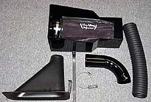
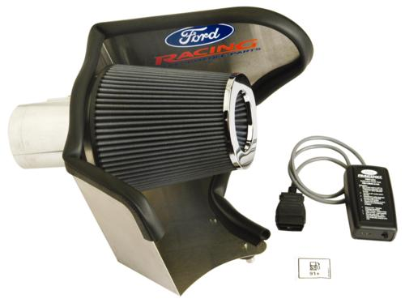
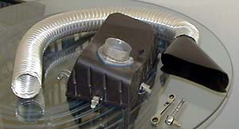
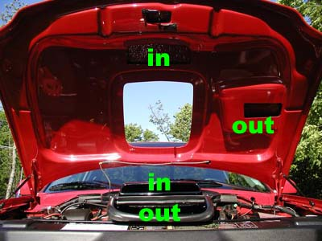

|
"Cold Air Kits?" HA! |
|
I have seen only a few reliable data points demonstrating any power gains at all on a stock engine from
the addition of a cone filter (which makes sense--why would Ford choke its highest-output engine with
an inferior air filter?). In fact, Richard Holdener's recent article in MM&FF seems to indicate that the stock airbox is fine until airflow needs are significantly higher
than stock.
Further, most of the aftermarket "cold air" cone filter setups merely suck hot air from under the hood. If the filter is not enclosed (like the stock filter), it is definitely NOT a "cold air kit." These open filters average 20-40 degrees hotter in intake temps than the stock filter box. There is reliable dyno data which prove that such systems cause a loss of power. But more importantly, although the intercooler will remove most of the extra heat, a few degrees hotter IATs might be the difference between detonating or not. Fortunately, there are some true "cold air" filter systems on the market. The first is Powersurge Performance's (out of business as of 2011) "FASTAir" system ($200 + $175 for cone filter). The second cold air kit (to the left) is from Johnny Lightning Performance ($275 with filter). JLP has recently upgraded its filter kits to include the cool perforated filter top shown below. Volant also makes a fully enclosed filter box, but many people have reported poor results or other dissatisfaction with it. A true cold air kit can show a dramatic difference in intake air temperatures. As reported by soap from F150 Online: Was helping a friend this weekend work on his L. He has the full PSP Fast Air kit. I wanted to check out how it worked so when work was done we took a ride up to the local parts store and I did a little data logging. We drove 3 minutes to the store and parked. In the 12 minutes we idled in the parking lot the IAT rose from 82* to 146*. 11 seconds after pulling out on the main road (45mph) the IAT dropped to 82* . . . 1* warmer than the outside temp reading of 81*. FYI . . . I logged another friend's L the same day. All he has is a open element cone filter, no ram air or fresh air kit. On the freeway cruising at 70MPH his IAT never got below 92*. The outside temp at that time was 78*. "Ltnbolt" from the F150 Online boards reports on the PSP FASTAir kit: "had DealerJim's Autotap hooked up to my truck last night. The air inlet temp started at 109 degrees while idling for about 15 minutes while we setup the laptop. As I drove down the street in the rain at about 40 mph the temp started dropping. After about a mile it was in the high 80's when I stopped to make a turn. In another 1/2 mile it was down to the same temp my overhead thermometer was reading which was 73 degrees. It would start climbing every time I stopped for a light and drop quickly to outside temp when I started moving again." "Silver 2000" reports: "I'm recording just 2 to 10 degrees over ambient in the same temps w/ the stock airbox. . . . w/ the modified stock airbox [holes drilled in the stock airbox] I'm seeing anywhere up to 50 over ambient in traffic and low speed cruising. When on the highway or interstate I'm getting +20 over around 55 to 60 and about +10 over at 80." On the other hand, Silver 2000 found that a cone-style filter added .2 to the mass air voltage (4.9 versus 4.7), so the cone filter definitely appears to flow more air with a modified engine.
"Wydopnthrtl" reports:
"It takes a steady 30 mph to "flush" the hot air from the face of an "open" filter. I'm not nearly finished yet, but I can tell you already I'm definitely going to end up with an enclosed/fresh air setup. So far I'm seeing temp differences of up to 50 degrees F (at filter face)."
"Camcojb" collected some excellent data in May 2004:
I had the Swanson $300. open air filter setup with nice billet aluminum MAF adapter and anodized aluminum
brackets and air diverter. Very nice quality. I always wondered about the IAT though. So I did some
datalogging yesterday and since I thought I knew what was going to happen I had ordered an Airaid
system to replace it.
Finally, as well said by Kenne Bell:
"Right there on the list [of most ridiculous products] has to be those "underhood exposed filters" that suck in 200� underhood air instead of ambient (70�-100� air from the fenderwell). 10� air temp rise is -1% HP. That's how dynos are calibrated for temperature changes. Does anyone really believe that all those OEM manufacturers designed expensive plastic inlet systems - for the last 20 years - that pull cool air from the fenderwell, hood or grill because they didn't have anything else to spend their money on?" The moral of the story: If it ain't broke, don't fix it. For stock engines, the stock airbox is fine. For modified engines, the PSP or JLP kits are the ticket. All other cone filter setups are suboptimal. |
|
For those who say that it doesn't matter, ask them why Ford's own performance filter kits (like the 05-06 Mustang kit to the left) have heat shields.
|
|
Before I decided to go with the Johnny Lightning filter--not for performance, but just because it looks good, increases the delightful blower whine, and is easier to clean with the optional "Outerwear" filter cover. 
Another option is to add a simple cold air duct to feed the stock airbox (with stock paper filter or K&N). The
flange pictured is a header flange with a piece of 3" pipe welded to it.
Parts are available
here
.
One Lightning owner who added a home brew cold air reported a before-and-after times of 13.64
@ 99 versus 13.53 @ 102!
The ultimate cool air intake has to be the Keystone Restyling shaker hood shown below. The Keystone shaker ducts air from the scoop through a series of channels, which then opens just above the air filter. Cool.  My shaker hood airbox is shown here . |
{kind=link}